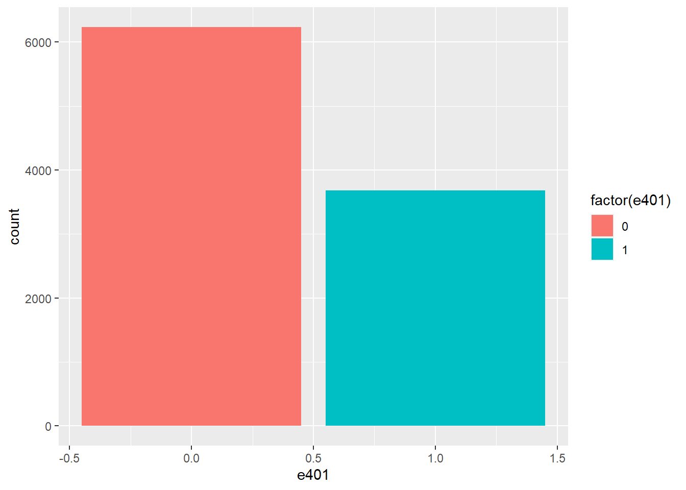

Chapter 9 Machine Learning for wage prediction
We illustrate how to predict an outcome variable Y in a high-dimensional setting, where the number of covariates \(p\) is large in relation to the sample size \(n\). So far we have used linear prediction rules, e.g. Lasso regression, for estimation. Now, we also consider nonlinear prediction rules including tree-based methods.
9.1 Data
Again, we consider data from the U.S. March Supplement of the Current Population Survey (CPS) in 2015. The preproccessed sample consists of \(5150\) never-married individuals.
load("./data/wage2015_subsample_inference.Rdata")
dim(data)## [1] 5150 20
# Importing relevant libraries
import pandas as pd
import numpy as np
import pyreadr
import math
import matplotlib.pyplot as plt
import random
rdata_read = pyreadr.read_r("./data/wage2015_subsample_inference.Rdata")
# Extracting the data frame from rdata_read
data = rdata_read["data"]
data.shape## (5150, 20)The outcomes \(Y_i\)’s are hourly (log) wages of never-married workers living in the U.S. The raw regressors \(Z_i\)’s consist of a variety of characteristics, including experience, education and industry and occupation indicators.
Z <- subset(data, select=-c(lwage,wage)) # regressors
colnames(Z)## [1] "sex" "shs" "hsg" "scl" "clg" "ad" "mw" "so" "we" "ne"
## [11] "exp1" "exp2" "exp3" "exp4" "occ" "occ2" "ind" "ind2"
Z = data.loc[:, 'sex':'ind2']
Z.columns## Index(['sex', 'shs', 'hsg', 'scl', 'clg', 'ad', 'mw', 'so', 'we', 'ne', 'exp1',
## 'exp2', 'exp3', 'exp4', 'occ', 'occ2', 'ind', 'ind2'],
## dtype='object')The following figure shows the weekly wage distribution from the US survey data.
hist(data$wage, xlab= "hourly wage", main = "Empirical wage distribution from the US survey data",
breaks = 35)
plt.hist(data.wage , bins = np.arange(0, 550, 20) )plt.xlabel('hourly wage')plt.ylabel('Frequency')plt.title( 'Empirical wage distribution from the US survey data' )plt.ylim((0, 3000))plt.show()
Wages show a high degree of skewness. Hence, wages are transformed in almost all studies by the logarithm.
9.2 Analysis
Due to the skewness of the data, we are considering log wages which leads to the following regression model
\[log(wage) = g(Z) + \epsilon.\]
We will estimate the two sets of prediction rules: Linear and Nonlinear Models. In linear models, we estimate the prediction rule of the form
\[\hat g(Z) = \hat \beta'X.\] Again, we generate \(X\) in two ways:
Basic Model: \(X\) consists of a set of raw regressors (e.g. gender, experience, education indicators, regional indicators).
Flexible Model: \(X\) consists of all raw regressors from the basic model plus occupation and industry indicators, transformations (e.g., \({exp}^2\) and \({exp}^3\)) and additional two-way interactions.
To evaluate the out-of-sample performance, we split the data first.
set.seed(1234)
training <- sample(nrow(data), nrow(data)*(3/4), replace = FALSE)
data_train <- data[training,]
data_test <- data[-training,]
# Checking dimensions
dim(data_test)## [1] 1288 20dim(data_train)## [1] 3862 20
# Setting parameters to split the data
nrow = data.shape[0]
length = int(nrow*(3/4))
data = data.reset_index().drop( 'rownames', axis = 1)
# Splitting the data
from numpy.random import default_rng
random.seed(30)
rng = default_rng()
training = rng.choice(nrow, size = length, replace=False)
training_bool = data.index.isin( training )
data_train = data.iloc[training,:]
data_test = data[~training_bool]
# Checking dimensions
data_test.shape## (1288, 20)data_train.shape## (3862, 20)We construct the two different model matrices \(X_{basic}\) and \(X_{flex}\) for both the training and the test sample:
X_basic <- "sex + exp1 + exp2+ shs + hsg+ scl + clg + mw + so + we + occ2+ ind2"
X_flex <- "sex + exp1 + exp2 + shs+hsg+scl+clg+occ2+ind2+mw+so+we + (exp1+exp2+exp3+exp4)*(shs+hsg+scl+clg+occ2+ind2+mw+so+we)"
# Formulas
formula_basic <- as.formula(paste("lwage", "~", X_basic))
formula_flex <- as.formula(paste("lwage", "~", X_flex))
# Models
model_X_basic_train <- model.matrix(formula_basic,data_train)
model_X_basic_test <- model.matrix(formula_basic,data_test)
p_basic <- dim(model_X_basic_train)[2] # regressors
model_X_flex_train <- model.matrix(formula_flex,data_train)
model_X_flex_test <- model.matrix(formula_flex,data_test)
p_flex <- dim(model_X_flex_train)[2] # regressors
Y_train <- data_train$lwage
Y_test <- data_test$lwage
# Dimensions
dim(model_X_basic_train)## [1] 3862 52p_basic## [1] 52p_flex## [1] 246
# Importing relevant libraries
import statsmodels.api as sm
import statsmodels.formula.api as smf
import patsy
# Formulas
formula_basic = "lwage ~ sex + exp1 + exp2+ shs + hsg+ scl + clg + mw + so + we + occ2+ ind2"
formula_flex = "lwage ~ sex + exp1 + exp2 + shs+hsg+scl+clg+occ2+ind2+mw+so+we + (exp1+exp2+exp3+exp4)*(shs+hsg+scl+clg+occ2+ind2+mw+so+we)"
# Models
y_basic_train, model_X_basic_train = patsy.dmatrices(formula_basic, data_train, return_type='dataframe')
y_basic_test , model_X_basic_test = patsy.dmatrices(formula_basic, data_test, return_type='dataframe')
p_basic = model_X_basic_train.shape[ 1 ] # regressors
y_flex_train, model_X_flex_train = patsy.dmatrices(formula_flex, data_train, return_type='dataframe')
y_flex_test , model_X_flex_test = patsy.dmatrices(formula_flex, data_test, return_type='dataframe')
p_flex = model_X_flex_train.shape[ 1 ] # regressors
Y_train = data_train['lwage']
Y_test = data_test['lwage']
# Dimensions
model_X_basic_train.shape## (3862, 52)print(p_basic)## 52print(p_flex)## 246As known from our first lab, the basic model consists of \(10\) regressors and the flexible model of \(246\) regressors. Let us fit our models to the training sample using the two different model specifications. We are starting by running a simple ols regression.
9.3 OLS
We fit the basic model to our training data by running an ols regression and compute the mean squared error on the test sample.
# OLS (basic model)
fit.lm.basic <- lm(formula_basic, data_train)
# Compute out-of-sample performance
yhat.lm.basic <- predict(fit.lm.basic, newdata=data_test)
cat("The mean squared error (MSE) using the basic model is equal to" , mean((Y_test-yhat.lm.basic)^2)) # MSE OLS (basic model)## The mean squared error (MSE) using the basic model is equal to 0.2293541
# OLS (basic model)
lm_basic = sm.OLS( Y_train, model_X_basic_train )
fit_lm_basic = lm_basic.fit()
# Compute out-of-sample performance
yhat_lm_basic = fit_lm_basic.predict( model_X_basic_test )
print( f"The mean squared error (MSE) using the basic model is equal to , {np.mean((Y_test-yhat_lm_basic)**2)} ") # MSE OLS (basic model) ## The mean squared error (MSE) using the basic model is equal to , 0.2335515240355897To determine the out-of-sample \(MSE\) and the standard error in one step, we can use the function lm:
MSE.lm.basic <- summary(lm((Y_test-yhat.lm.basic)^2~1))$coef[1:2]
MSE.lm.basic## [1] 0.22935406 0.01564666
# OLS (basic model)
resid_basic = (Y_test-yhat_lm_basic)**2
MSE_lm_basic = sm.OLS( resid_basic , np.ones( resid_basic.shape[0] ) ).fit().summary2().tables[1].iloc[0, 0:2]
MSE_lm_basic## Coef. 0.233552
## Std.Err. 0.015956
## Name: const, dtype: float64We also compute the out-of-sample \(R^2\):
R2.lm.basic <- 1 - MSE.lm.basic[1]/var(Y_test)
cat("The R^2 using the basic model is equal to",R2.lm.basic) # MSE OLS (basic model) ## The R^2 using the basic model is equal to 0.2819899
R2_lm_basic = 1 - ( MSE_lm_basic[0]/Y_test.var() )
print( f"The R^2 using the basic model is equal to, {R2_lm_basic}" ) # MSE OLS (basic model) ## The R^2 using the basic model is equal to, 0.3191734762125098We repeat the same procedure for the flexible model.
# OLS (flexible model)
fit.lm.flex <- lm(formula_flex, data_train)
# Compute the out-of-sample performance
options(warn=-1)
yhat.lm.flex <- predict(fit.lm.flex, newdata=data_test)
MSE.lm.flex <- summary(lm((Y_test-yhat.lm.flex)^2~1))$coef[1:2]
# MSE and R squared
R2.lm.flex <- 1 - MSE.lm.flex[1]/var(Y_test)
cat("The R^2 using the flexible model is equal to",R2.lm.flex) # MSE OLS (flexible model) ## The R^2 using the flexible model is equal to 0.2383204
# OLS (flex model)
lm_flex = sm.OLS( Y_train, model_X_flex_train )
fit_lm_flex = lm_flex.fit()
# Compute the out-of-sample performance
yhat_lm_flex = fit_lm_flex.predict( model_X_flex_test )
resid_flex = (Y_test-yhat_lm_flex)**2
# MSE and R squared
MSE_lm_flex = sm.OLS( resid_flex , np.ones( resid_flex.shape[0] ) ).fit().summary2().tables[1].iloc[0, 0:2]
MSE_lm_flex## Coef. 0.243739
## Std.Err. 0.015639
## Name: const, dtype: float64R2_lm_flex = 1 - ( MSE_lm_flex[0]/Y_test.var() )
print( f"The R^2 using the flex model is equal to, {R2_lm_flex}" ) # MSE OLS (flex model) ## The R^2 using the flex model is equal to, 0.28947509942887917We observe that ols regression works better for the basic model with smaller \(p/n\) ratio. We are proceeding by running lasso regressions and its versions.
9.4 Lasso, Ridge and Elastic Net
Considering the basic model, we run a lasso/post-lasso regression first and then we compute the measures for the out-of-sample performance. Note that applying the package hdm and the function rlasso we rely on a theoretical based choice of the penalty level \(\lambda\) in the lasso regression.
# lasso and versions
library(hdm)
fit.rlasso <- rlasso(formula_basic, data_train, post=FALSE)
fit.rlasso.post <- rlasso(formula_basic, data_train, post=TRUE)
import warnings
warnings.filterwarnings("ignore")
import hdmpy
fit_rlasso = hdmpy.rlasso( model_X_basic_train.to_numpy() , Y_train.to_numpy().reshape( Y_train.size , 1 ) , post = False )
fit_rlasso_post = hdmpy.rlasso( model_X_basic_train.to_numpy() , Y_train.to_numpy().reshape( Y_train.size , 1 ) , post = True )Estimating the predictions from rlasso models
We have to know that the residuals output come from this formula:
-
x1 = x - np.ones( (x.shape[1] , 1) ) @ x.mean( axis = 0 ) -
beta = model.est[‘beta’].loc[ fit_rlasso.est[‘index’].iloc[:, 0].to_list(), ].to_numpy() -
y1 = y - y.mean() -
yhat = x1 @ beta + y.mean()
So we have to apply those transformations to original test data
# lasso and versions
library(hdm)
yhat.rlasso <- predict(fit.rlasso, newdata=data_test)
yhat.rlasso.post <- predict(fit.rlasso.post, newdata=data_test)
MSE.lasso <- summary(lm((Y_test-yhat.rlasso)^2~1))$coef[1:2]
MSE.lasso.post <- summary(lm((Y_test-yhat.rlasso.post)^2~1))$coef[1:2]
R2.lasso <- 1-MSE.lasso[1]/var(Y_test)
R2.lasso.post <- 1-MSE.lasso.post[1]/var(Y_test)
cat("The R^2 using the basic model is equal to",R2.lasso,"for lasso and",R2.lasso.post,"for post-lasso") # R^2 lasso/post-lasso (basic model) ## The R^2 using the basic model is equal to 0.2674345 for lasso and 0.2706874 for post-lasso
# Getting mean of each variable
meanx = model_X_basic_test.mean( axis = 0 ).values.\
reshape( model_X_basic_test.shape[ 1 ] , 1 )
# Reducing the mean
new_x1 = model_X_basic_test.to_numpy() - \
(np.ones( ( model_X_basic_test.shape[ 0 ] , 1 ) ) @ meanx.T)
# Getting the significant variables
x1_est_rlasso = new_x1[ :, fit_rlasso.est['index'].iloc[:, 0].to_list()]
# Getting the coef. from significant variables
beta_rlasso = fit_rlasso.est['beta'].loc[ fit_rlasso.est['index'].\
iloc[:, 0].to_list(), ].to_numpy()
# yhat
yhat_rlasso = (x1_est_rlasso @ beta_rlasso) + np.mean( Y_test.to_numpy() )
residuals_rlasso = Y_test.to_numpy().reshape( Y_test.to_numpy().size, 1) - yhat_rlasso
# Getting mean of each variable
meanx = model_X_basic_test.mean( axis = 0 ).values.\
reshape( model_X_basic_test.shape[ 1 ] , 1 )
# Reducing the mean
new_x1 = model_X_basic_test.to_numpy() - \
(np.ones( ( model_X_basic_test.shape[ 0 ] , 1 ) ) @ meanx.T)
# Getting the significant variables
x1_est_rlasso_post = new_x1[ :, fit_rlasso_post.est['index'].iloc[:, 0].to_list()]
# Getting the coef. from significant variables
beta_rlasso_post = fit_rlasso_post.est['beta'].loc[ fit_rlasso_post.est['index'].\
iloc[:, 0].to_list(), ].to_numpy()
# yhat
yhat_rlasso_post = (x1_est_rlasso_post @ beta_rlasso_post) + np.mean( Y_test.to_numpy() )
residuals_rlasso_post = Y_test.to_numpy().reshape( Y_test.to_numpy().size, 1) - yhat_rlasso_post
MSE_lasso = sm.OLS( ( residuals_rlasso )**2 , np.ones( yhat_rlasso.size ) ).fit().summary2().tables[1].round(3)
MSE_lasso_post = sm.OLS( ( residuals_rlasso_post )**2 , np.ones( yhat_rlasso_post.size ) ).fit().summary2().tables[1].round(3)
R2_lasso = 1 - MSE_lasso.iloc[0, 0]/ np.var( Y_test )
R2_lasso_post = 1 - MSE_lasso_post.iloc[0, 0]/ np.var( Y_test )
print( f"The R^2 using the basic model is equal to {R2_lasso},for lasso and {R2_lasso_post} for post-lasso") # R^2 lasso/post-lasso (basic model) ## The R^2 using the basic model is equal to 0.2735755983378201,for lasso and 0.2648234971129745 for post-lassoNow, we repeat the same procedure for the flexible model.
# lasso and versions
fit.rlasso.flex <- rlasso(formula_flex, data_train, post=FALSE)
fit.rlasso.post.flex <- rlasso(formula_flex, data_train, post=TRUE)
yhat.rlasso.flex <- predict(fit.rlasso.flex, newdata=data_test)
yhat.rlasso.post.flex <- predict(fit.rlasso.post.flex, newdata=data_test)
MSE.lasso.flex <- summary(lm((Y_test-yhat.rlasso.flex)^2~1))$coef[1:2]
MSE.lasso.post.flex <- summary(lm((Y_test-yhat.rlasso.post.flex)^2~1))$coef[1:2]
R2.lasso.flex <- 1-MSE.lasso.flex[1]/var(Y_test)
R2.lasso.post.flex <- 1-MSE.lasso.post.flex[1]/var(Y_test)
cat("The R^2 using the flexible model is equal to",R2.lasso.flex,"for lasso and",R2.lasso.post.flex,"for post-lasso") # R^2 lasso/post-lasso (flexible model) ## The R^2 using the flexible model is equal to 0.2653058 for lasso and 0.2614714 for post-lasso
fit_rlasso_flex = hdmpy.rlasso( model_X_flex_train.to_numpy() , Y_train.to_numpy().reshape( Y_train.size , 1 ) , post = False )
fit_rlasso_post_flex = hdmpy.rlasso( model_X_flex_train.to_numpy() , Y_train.to_numpy().reshape( Y_train.size , 1 ) , post = True )
# Getting mean of each variable
meanx = model_X_flex_test.mean( axis = 0 ).values.\
reshape( model_X_flex_test.shape[ 1 ] , 1 )
# Reducing the mean
new_x1 = model_X_flex_test.to_numpy() - \
(np.ones( ( model_X_flex_test.shape[ 0 ] , 1 ) ) @ meanx.T)
# Getting the significant variables
x1_est_rlasso_flex = new_x1[ :, fit_rlasso_flex.est['index'].iloc[:, 0].to_list()]
# Getting the coef. from significant variables
beta_rlasso_flex = fit_rlasso_flex.est['beta'].loc[ fit_rlasso_flex.est['index'].\
iloc[:, 0].to_list(), ].to_numpy()
# yhat
yhat_rlasso_flex = (x1_est_rlasso_flex @ beta_rlasso_flex) + np.mean( Y_test.to_numpy() )
residuals_rlasso_flex = Y_test.to_numpy().reshape( Y_test.to_numpy().size, 1) - yhat_rlasso_flex
# Getting mean of each variable
meanx = model_X_flex_test.mean( axis = 0 ).values.\
reshape( model_X_flex_test.shape[ 1 ] , 1 )
# Reducing the mean
new_x1 = model_X_flex_test.to_numpy() - \
(np.ones( ( model_X_flex_test.shape[ 0 ] , 1 ) ) @ meanx.T)
# Getting the significant variables
x1_est_rlasso_post_flex = new_x1[ :, fit_rlasso_post_flex.est['index'].iloc[:, 0].to_list()]
# Getting the coef. from significant variables
beta_rlasso_post_flex = fit_rlasso_post_flex.est['beta'].loc[ fit_rlasso_post_flex.est['index'].\
iloc[:, 0].to_list(), ].to_numpy()
# yhat
yhat_rlasso_post_flex = (x1_est_rlasso_post_flex @ beta_rlasso_post_flex) + np.mean( Y_test.to_numpy() )
residuals_rlasso_post_flex = Y_test.to_numpy().reshape( Y_test.to_numpy().size, 1) - yhat_rlasso_post_flex
MSE_lasso_flex = sm.OLS( ( residuals_rlasso_flex )**2 , np.ones( yhat_rlasso_flex.size ) ).fit().summary2().tables[1].round(3)
MSE_lasso_post_flex = sm.OLS( ( residuals_rlasso_post_flex )**2 , np.ones( yhat_rlasso_post_flex.size ) ).fit().summary2().tables[1].round(3)
R2_lasso_flex = 1 - MSE_lasso.iloc[0, 0]/ np.var( Y_test )
R2_lasso_post_flex = 1 - MSE_lasso_post_flex.iloc[0, 0]/ np.var( Y_test )
print( f"The R^2 using the basic model is equal to {R2_lasso_flex},for lasso and {R2_lasso_post_flex} for post-lasso") # R^2 lasso/post-lasso (basic model) ## The R^2 using the basic model is equal to 0.2735755983378201,for lasso and 0.2706582312628716 for post-lassoIt is worth to notice that lasso regression works better for the more complex model.
In contrast to a theoretical based choice of the tuning parameter \(\lambda\) in the lasso regression, we can also use cross-validation to determine the penalty level by applying the package glmnet and the function cv.glmnet. In this context, we also run a ridge and a elastic net regression by adjusting the parameter alpha.
library(glmnet)## Loading required package: Matrix## Loaded glmnet 4.1-3fit.lasso.cv <- cv.glmnet(model_X_basic_train, Y_train, family="gaussian", alpha=1)
fit.ridge <- cv.glmnet(model_X_basic_train, Y_train, family="gaussian", alpha=0)
fit.elnet <- cv.glmnet(model_X_basic_train, Y_train, family="gaussian", alpha=.5)
yhat.lasso.cv <- predict(fit.lasso.cv, newx = model_X_basic_test)
yhat.ridge <- predict(fit.ridge, newx = model_X_basic_test)
yhat.elnet <- predict(fit.elnet, newx = model_X_basic_test)
MSE.lasso.cv <- summary(lm((Y_test-yhat.lasso.cv)^2~1))$coef[1:2]
MSE.ridge <- summary(lm((Y_test-yhat.ridge)^2~1))$coef[1:2]
MSE.elnet <- summary(lm((Y_test-yhat.elnet)^2~1))$coef[1:2]
R2.lasso.cv <- 1-MSE.lasso.cv[1]/var(Y_test)
R2.ridge <- 1-MSE.ridge[1]/var(Y_test)
R2.elnet <- 1-MSE.elnet[1]/var(Y_test)
# R^2 using cross-validation (basic model)
cat("R^2 using cross-validation for lasso, ridge and elastic net in the basic model:",R2.lasso.cv,R2.ridge,R2.elnet)## R^2 using cross-validation for lasso, ridge and elastic net in the basic model: 0.2824847 0.2669501 0.28039
from sklearn.linear_model import LassoCV
from sklearn.preprocessing import StandardScaler
from sklearn.linear_model import RidgeCV, ElasticNetCV
import statsmodels.api as sm
# Reshaping Y variable
Y_vec = Y_train.to_numpy().reshape( Y_train.to_numpy().size, 1)
# Scalar distribution
scaler = StandardScaler()
scaler.fit( Y_vec )## StandardScaler()std_Y = scaler.transform( Y_vec )
# Regressions
fit_lasso_cv_basic = LassoCV(cv = 10 , random_state = 0 , normalize = True ).fit( model_X_basic_train, std_Y )
fit_ridge_basic = ElasticNetCV( cv = 10 , normalize = True , random_state = 0 , l1_ratio = 0.0001 ).fit( model_X_basic_train , std_Y )
fit_elnet_basic = ElasticNetCV( cv = 10 , normalize = True , random_state = 0 , l1_ratio = 0.5, max_iter = 100000 ).fit( model_X_basic_train , std_Y )
# Predictions
yhat_lasso_cv_basic = scaler.inverse_transform( fit_lasso_cv_basic.predict( model_X_basic_test ) )
yhat_ridge_basic = scaler.inverse_transform( fit_ridge_basic.predict( model_X_basic_test ) )
yhat_elnet_basic = scaler.inverse_transform( fit_elnet_basic.predict( model_X_basic_test ) )
MSE_lasso_cv_basic = sm.OLS( ((Y_test - yhat_lasso_cv_basic)**2 ) , np.ones( yhat_lasso_cv_basic.shape ) ).fit().summary2().tables[1].round(3)
MSE_ridge_basic = sm.OLS( ((Y_test - yhat_ridge_basic)**2 ) , np.ones( yhat_ridge_basic.size ) ).fit().summary2().tables[1].round(3)
MSE_elnet_basic = sm.OLS( ((Y_test - yhat_elnet_basic)**2 ) , np.ones( yhat_elnet_basic.size ) ).fit().summary2().tables[1].round(3)
# our coefficient of MSE_elnet are far from r output
R2_lasso_cv_basic = 1- MSE_ridge_basic.iloc[0,0] / np.var( Y_test )
R2_ridge_basic = 1- MSE_lasso_cv_basic.iloc[0,0] / np.var( Y_test )
R2_elnet_basic = 1- MSE_elnet_basic.iloc[0,0] / np.var( Y_test )
print( f"R^2 using cross-validation for lasso, ridge and elastic net in the basic model: {R2_lasso_cv_basic},{R2_ridge_basic},{R2_elnet_basic}")## R^2 using cross-validation for lasso, ridge and elastic net in the basic model: 0.005177827442556682,0.31733610446204774,0.31733610446204774Note that the following calculations for the flexible model require significant computation time.
fit.lasso.cv.flex <- cv.glmnet(model_X_flex_train, Y_train, family="gaussian", alpha=1)
fit.ridge.flex <- cv.glmnet(model_X_flex_train, Y_train, family="gaussian", alpha=0)
fit.elnet.flex <- cv.glmnet(model_X_flex_train, Y_train, family="gaussian", alpha=.5)
yhat.lasso.cv.flex <- predict(fit.lasso.cv.flex , newx = model_X_flex_test)
yhat.ridge.flex <- predict(fit.ridge.flex , newx = model_X_flex_test)
yhat.elnet.flex <- predict(fit.elnet.flex , newx = model_X_flex_test)
MSE.lasso.cv.flex <- summary(lm((Y_test-yhat.lasso.cv.flex )^2~1))$coef[1:2]
MSE.ridge.flex <- summary(lm((Y_test-yhat.ridge.flex )^2~1))$coef[1:2]
MSE.elnet.flex <- summary(lm((Y_test-yhat.elnet.flex )^2~1))$coef[1:2]
R2.lasso.cv.flex <- 1-MSE.lasso.cv.flex [1]/var(Y_test)
R2.ridge.flex <- 1-MSE.ridge.flex [1]/var(Y_test)
R2.elnet.flex <- 1-MSE.elnet.flex [1]/var(Y_test)
# R^2 using cross-validation (flexible model)
cat("R^2 using cross-validation for lasso, ridge and elastic net in the flexible model:",R2.lasso.cv.flex,R2.ridge.flex,R2.elnet.flex)## R^2 using cross-validation for lasso, ridge and elastic net in the flexible model: 0.2751157 0.2710676 0.2761405
# Reshaping Y variable
Y_vec = Y_train.to_numpy().reshape( Y_train.to_numpy().size, 1)
# Scalar distribution
scaler = StandardScaler()
scaler.fit( Y_vec )## StandardScaler()std_Y = scaler.transform( Y_vec )
# Regressions
fit_lasso_cv_flex = LassoCV(cv = 10 , random_state = 0 , normalize = True ).fit( model_X_flex_train, std_Y )
fit_ridge_flex = ElasticNetCV( cv = 10 , normalize = True , random_state = 0 , l1_ratio = 0.0001 ).fit( model_X_flex_train , std_Y )
fit_elnet_flex = ElasticNetCV( cv = 10 , normalize = True , random_state = 0 , l1_ratio = 0.5, max_iter = 100000 ).fit( model_X_flex_train , std_Y )
# Predictions
yhat_lasso_cv_flex = scaler.inverse_transform( fit_lasso_cv_flex.predict( model_X_flex_test ) )
yhat_ridge_flex = scaler.inverse_transform( fit_ridge_flex.predict( model_X_flex_test ) )
yhat_elnet_flex = scaler.inverse_transform( fit_elnet_flex.predict( model_X_flex_test ) )
MSE_lasso_cv_flex = sm.OLS( ((Y_test - yhat_lasso_cv_flex)**2 ) , np.ones( yhat_lasso_cv_flex.shape ) ).fit().summary2().tables[1].round(3)
MSE_ridge_flex = sm.OLS( ((Y_test - yhat_ridge_flex)**2 ) , np.ones( yhat_ridge_flex.size ) ).fit().summary2().tables[1].round(3)
MSE_elnet_flex = sm.OLS( ((Y_test - yhat_elnet_flex)**2 ) , np.ones( yhat_elnet_flex.size ) ).fit().summary2().tables[1].round(3)
# our coefficient of MSE_elnet are far from r output
R2_lasso_cv_flex = 1- MSE_ridge_flex.iloc[0,0] / np.var( Y_test )
R2_ridge_flex = 1- MSE_lasso_cv_flex.iloc[0,0] / np.var( Y_test )
R2_elnet_flex = 1- MSE_elnet_flex.iloc[0,0] / np.var( Y_test )
print( f"R^2 using cross-validation for lasso, ridge and elastic net in the basic model: {R2_lasso_cv_flex},{R2_ridge_flex},{R2_elnet_flex}")## R^2 using cross-validation for lasso, ridge and elastic net in the basic model: 0.011012561592453785,0.30858400323720225,0.30566663616225376The performance of the lasso regression with cross-validated penalty is quite similar to the performance of lasso using a theoretical based choice of the tuning parameter.
9.5 Non-linear models
Besides linear regression models, we consider nonlinear regression models to build a predictive model. We are applying regression trees, random forests, boosted trees and neural nets to estimate the regression function \(g(X)\). First, we load the relevant libraries
library(randomForest)## randomForest 4.6-14## Type rfNews() to see new features/changes/bug fixes.library(rpart)
library(nnet)
library(gbm)## Loaded gbm 2.1.8library(rpart.plot)
library(reticulate)
import("tensorflow")## Module(tensorflow)import("keras")## Module(keras)library(keras)
# in processand we illustrate the application of regression trees.
9.5.1 Regression Trees
We fit a regression tree to the training data using the basic model. The variable cp controls the complexity of the regression tree, i.e. how deep we build the tree.
# tree
fit.trees <- rpart(formula_basic, data_train,cp = 0.001)
prp(fit.trees,leaf.round=1, space=2, yspace=2,split.space=2,shadow.col = "gray",trace = 1) # plotting the tree## cex 0.15 xlim c(0, 1) ylim c(0, 1)
# in processAn important method to improve predictive performance is called “Pruning the Tree”. This means the process of cutting down the branches of a tree. We apply pruning to the complex tree above to reduce the depth. Initially, we determine the optimal complexity of the regression tree.
bestcp<- fit.trees$cptable[which.min(fit.trees$cptable[,"xerror"]),"CP"]
bestcp## [1] 0.002556354
# in processNow, we can prune the tree and visualize the prediction rule.
fit.prunedtree <- prune(fit.trees,cp=bestcp)
prp(fit.prunedtree,leaf.round=1, space=3, yspace=3, split.space=7, shadow.col = "gray",trace = 1,yesno=1)## cex 0.263 xlim c(0, 1) ylim c(0, 1)
# in processE.g., in the pruned tree the predicted hourly log wage for high-school graduates with more than \(9.5\) years of experience is \(2.8\), and otherwise is \(2.6\).
Finally, we calculate the mean-squared error and the \(R^2\) on the test sample to evaluate the out-of-sample performance of the pruned tree.
bestcp<- fit.trees$cptable[which.min(fit.trees$cptable[,"xerror"]),"CP"]
bestcp## [1] 0.002556354
# in processNow, we can prune the tree and visualize the prediction rule.
yhat.pt <- predict(fit.prunedtree,newdata=data_test)
MSE.pt <- summary(lm((Y_test-yhat.pt)^2~1))$coef[1:2]
R2.pt <- 1-MSE.pt[1]/var(Y_test)
# R^2 of the pruned tree
cat("R^2 of the pruned tree:",R2.pt)## R^2 of the pruned tree: 0.2238947
# in process9.6 Random Forest and Boosted Trees
In the next step, we apply the more advanced tree-based methods random forest and boosted trees.
bestcp<- fit.trees$cptable[which.min(fit.trees$cptable[,"xerror"]),"CP"]
bestcp## [1] 0.002556354
# in processNow, we can prune the tree and visualize the prediction rule.
## Applying the methods
# random forest
fit.rf <- randomForest(formula_basic, ntree=2000, nodesize=5, data=data_train)
# for tuning: adjust input "mtry" to change the number of variables randomly sampled as candidates at each split
# boosting
fit.boost <- gbm(formula_basic, data=data_train, distribution= "gaussian", bag.fraction = .5, interaction.depth=2, n.trees=1000, shrinkage=.01)
best.boost <- gbm.perf(fit.boost, plot.it = FALSE) # cross-validation to determine when to stop## OOB generally underestimates the optimal number of iterations although predictive performance is reasonably competitive. Using cv_folds>1 when calling gbm usually results in improved predictive performance.## Evaluating the methods
yhat.rf <- predict(fit.rf, newdata=data_test) # prediction
yhat.boost <- predict(fit.boost, newdata=data_test, n.trees=best.boost)
MSE.rf <- summary(lm((Y_test-yhat.rf)^2~1))$coef[1:2]
MSE.boost <- summary(lm((Y_test-yhat.boost)^2~1))$coef[1:2]
R2.rf <- 1-MSE.rf[1]/var(Y_test)
R2.boost <- 1-MSE.boost[1]/var(Y_test)
# printing R^2
cat("R^2 of the random forest and boosted trees:",R2.rf,R2.boost)## R^2 of the random forest and boosted trees: 0.2695651 0.2786383
# in processTo conclude, let us have a look at our results.
9.7 Results
library(xtable)
table<- matrix(0, 15, 3)
table[1,1:2] <- MSE.lm.basic
table[2,1:2] <- MSE.lm.flex
table[3,1:2] <- MSE.lasso
table[4,1:2] <- MSE.lasso.post
table[5,1:2] <- MSE.lasso.flex
table[6,1:2] <- MSE.lasso.post.flex
table[7,1:2] <- MSE.lasso.cv
table[8,1:2] <- MSE.ridge
table[9,1:2] <- MSE.elnet
table[10,1:2] <- MSE.lasso.cv.flex
table[11,1:2] <- MSE.ridge.flex
table[12,1:2] <- MSE.elnet.flex
table[13,1:2] <- MSE.rf
table[14,1:2] <- MSE.boost
table[15,1:2] <- MSE.pt
table[1,3] <- R2.lm.basic
table[2,3] <- R2.lm.flex
table[3,3] <- R2.lasso
table[4,3] <- R2.lasso.post
table[5,3] <- R2.lasso.flex
table[6,3] <- R2.lasso.post.flex
table[7,3] <- R2.lasso.cv
table[8,3] <- R2.ridge
table[9,3] <- R2.elnet
table[10,3] <- R2.lasso.cv.flex
table[11,3] <- R2.ridge.flex
table[12,3] <- R2.elnet.flex
table[13,3] <- R2.rf
table[14,3] <- R2.boost
table[15,3] <- R2.pt
colnames(table)<- c("MSE", "S.E. for MSE", "R-squared")
rownames(table)<- c("Least Squares (basic)","Least Squares (flexible)", "Lasso", "Post-Lasso","Lasso (flexible)","Post-Lasso (flexible)",
"Cross-Validated lasso", "Cross-Validated ridge","Cross-Validated elnet","Cross-Validated lasso (flexible)","Cross-Validated ridge (flexible)","Cross-Validated elnet (flexible)",
"Random Forest","Boosted Trees", "Pruned Tree")
tab <- xtable(table, digits =3)
print(tab,type="latex") # set type="latex" for printing table in LaTeX## % latex table generated in R 4.0.4 by xtable 1.8-4 package
## % Wed Nov 24 13:52:05 2021
## \begin{table}[ht]
## \centering
## \begin{tabular}{rrrr}
## \hline
## & MSE & S.E. for MSE & R-squared \\
## \hline
## Least Squares (basic) & 0.229 & 0.016 & 0.282 \\
## Least Squares (flexible) & 0.243 & 0.016 & 0.238 \\
## Lasso & 0.234 & 0.015 & 0.267 \\
## Post-Lasso & 0.233 & 0.015 & 0.271 \\
## Lasso (flexible) & 0.235 & 0.015 & 0.265 \\
## Post-Lasso (flexible) & 0.236 & 0.016 & 0.261 \\
## Cross-Validated lasso & 0.229 & 0.015 & 0.282 \\
## Cross-Validated ridge & 0.234 & 0.015 & 0.267 \\
## Cross-Validated elnet & 0.230 & 0.015 & 0.280 \\
## Cross-Validated lasso (flexible) & 0.232 & 0.015 & 0.275 \\
## Cross-Validated ridge (flexible) & 0.233 & 0.015 & 0.271 \\
## Cross-Validated elnet (flexible) & 0.231 & 0.015 & 0.276 \\
## Random Forest & 0.233 & 0.015 & 0.270 \\
## Boosted Trees & 0.230 & 0.015 & 0.279 \\
## Pruned Tree & 0.248 & 0.016 & 0.224 \\
## \hline
## \end{tabular}
## \end{table}| Weight OLS | Weight Lasso | |
|---|---|---|
| Constant | -0.162 | -0.147 |
| Least Squares (basic) | 0.281 | 0.293 |
| Post-Lasso (flexible) | 0.237 | 0.223 |
| Cross-Validated elnet (flexible) | -0.068 | -0.056 |
| Pruned Tree | -0.140 | 0.000 |
| Random Forest | 0.377 | 0.344 |
| Boosted Trees | 0.367 | 0.245 |
# in processAbove, we displayed the results for a single split of data into the training and testing part. The table shows the test MSE in column 1 as well as the standard error in column 2 and the test \(R^2\) in column 3. We see that the prediction rule produced by Elastic Net using the flexible model performs the best here, giving the lowest test MSE. Cross-Validated Lasso and Ridge, perform nearly as well. For any two of these methods, their testing MSEs are within one standard error of each other. Remarkably, OLS on a simple model performs extremely well, almost as well as best tree based method Random Forest. On the other hand, OLS on a flexible model with many regressors performs very poorly giving the highest test MSE. It is worth to notice that the nonlinear models, e.g. Random Forest, are not tuned. Thus, there is a lot of potential to improve the performance of the nonlinear methods we used in the analysis.
9.8 Ensemble learning
In the final step, we can build a prediction model by combing the strengths of the models we considered so far. This ensemble method is of the form \[ f(x) = \sum_{k=1}^K \alpha_k f_k(x) \] where the \(f_k\)’s denote our prediction rules from the table above and the \(\alpha_k\)’s are the corresponding weights. We focus on the prediction rules based on OLS, Post-Lasso, Elastic Net, Pruned Tree, Random Forest, Boosted Trees, and Neural Network and combine these methods into an ensemble method. The weights can be determined by a simple ols regression:
ensemble.ols <- summary(lm(Y_test~ yhat.lm.basic + yhat.rlasso.post.flex + yhat.elnet.flex+ yhat.pt+ yhat.rf + yhat.boost))
# in processAlternatively, we can determine the weights via lasso regression.
ensemble.lasso <- summary(rlasso(Y_test~ yhat.lm.basic + yhat.rlasso.post.flex + yhat.elnet.flex+ yhat.pt+ yhat.rf + yhat.boost))##
## Call:
## rlasso.formula(formula = Y_test ~ yhat.lm.basic + yhat.rlasso.post.flex +
## yhat.elnet.flex + yhat.pt + yhat.rf + yhat.boost)
##
## Post-Lasso Estimation: TRUE
##
## Total number of variables: 6
## Number of selected variables: 5
##
## Residuals:
## Min 1Q Median 3Q Max
## -1.853465 -0.282571 -0.005527 0.263961 3.548724
##
## Estimate
## (Intercept) -0.147
## yhat.lm.basic 0.293
## yhat.rlasso.post.flex 0.223
## yhat.elnet.flex -0.056
## yhat.pt 0.000
## yhat.rf 0.344
## yhat.boost 0.245
##
## Residual standard error: 0.4728
## Multiple R-squared: 0.3003
## Adjusted R-squared: 0.2976
## Joint significance test:
## the sup score statistic for joint significance test is 3.53 with a p-value of 0.04
# in processThe estimated weights are shown in the following table.
table <- matrix(0, 7, 2)
table[1:7,1] <- ensemble.ols$coef[1:7]
table[1:7,2] <- ensemble.lasso$coef[1:7]
colnames(table) <- c("Weight OLS", "Weight Lasso")
rownames(table) <- c("Constant","Least Squares (basic)","Post-Lasso (flexible)", "Cross-Validated elnet (flexible)", "Pruned Tree",
"Random Forest","Boosted Trees")
tab <- xtable(table, digits =3)
print(tab,type="latex") # set type="latex" for printing table in LaTeX## % latex table generated in R 4.0.4 by xtable 1.8-4 package
## % Wed Nov 24 13:52:11 2021
## \begin{table}[ht]
## \centering
## \begin{tabular}{rrr}
## \hline
## & Weight OLS & Weight Lasso \\
## \hline
## Constant & -0.162 & -0.147 \\
## Least Squares (basic) & 0.281 & 0.293 \\
## Post-Lasso (flexible) & 0.237 & 0.223 \\
## Cross-Validated elnet (flexible) & -0.068 & -0.056 \\
## Pruned Tree & -0.140 & 0.000 \\
## Random Forest & 0.377 & 0.344 \\
## Boosted Trees & 0.367 & 0.245 \\
## \hline
## \end{tabular}
## \end{table}| Weight OLS | Weight Lasso | |
|---|---|---|
| Constant | -0.162 | -0.147 |
| Least Squares (basic) | 0.281 | 0.293 |
| Post-Lasso (flexible) | 0.237 | 0.223 |
| Cross-Validated elnet (flexible) | -0.068 | -0.056 |
| Pruned Tree | -0.140 | 0.000 |
| Random Forest | 0.377 | 0.344 |
| Boosted Trees | 0.367 | 0.245 |
# in processFurther, the \(R^2\) for the test sample gets improved from \(30\%\) obtained by OLS to about \(31\%\) obtained by the ensemble method. We see that it is very powerful to aggregate prediction rules into an ensemble rule. Nevertheless, it is worth to notice that we should compare the ensemble method and the single rules on an additional validation set to ensure a fair comparison.